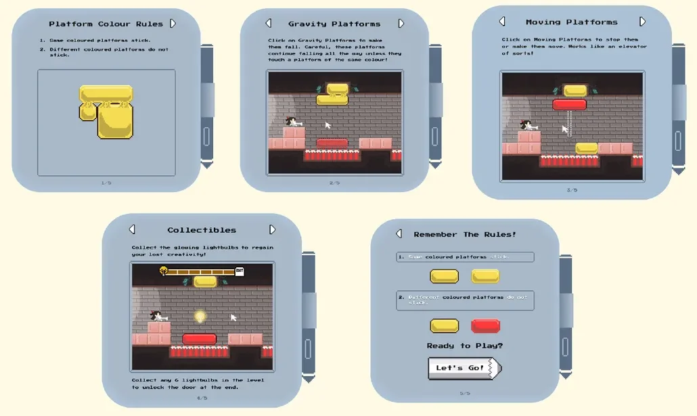
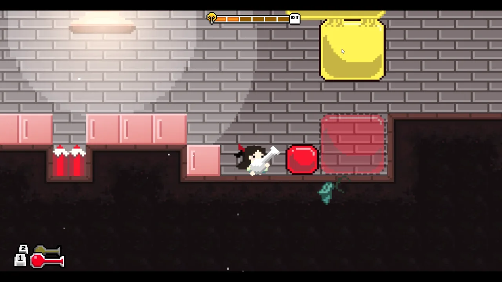
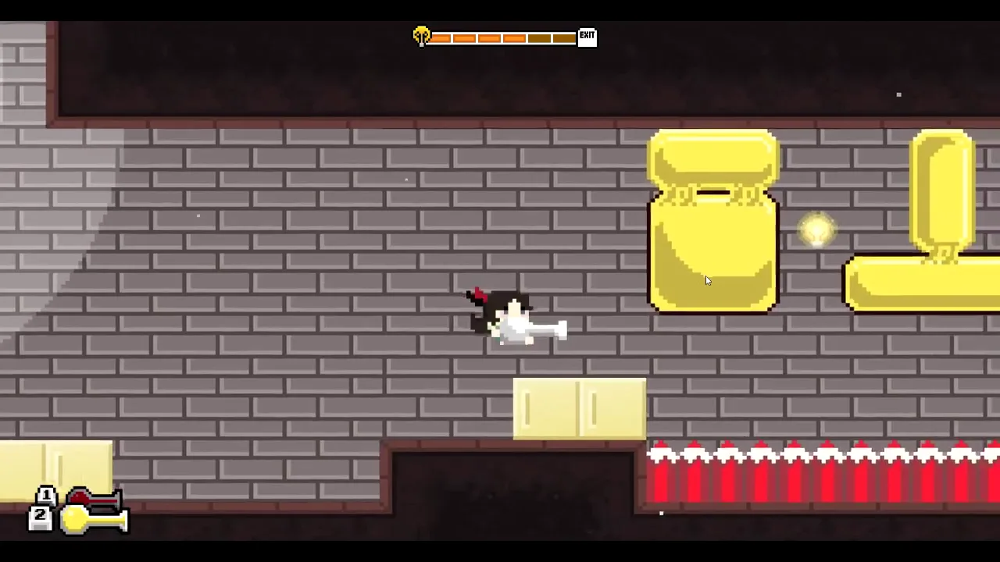
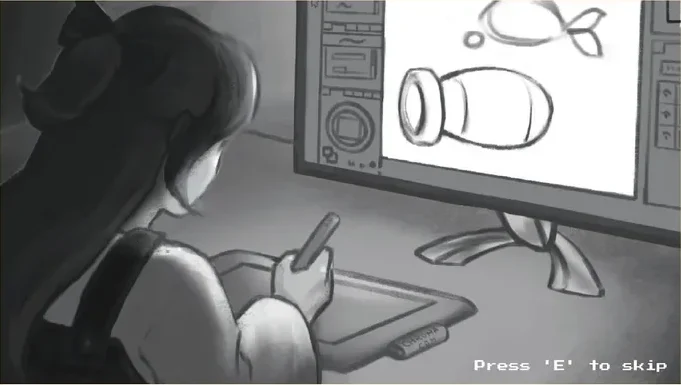
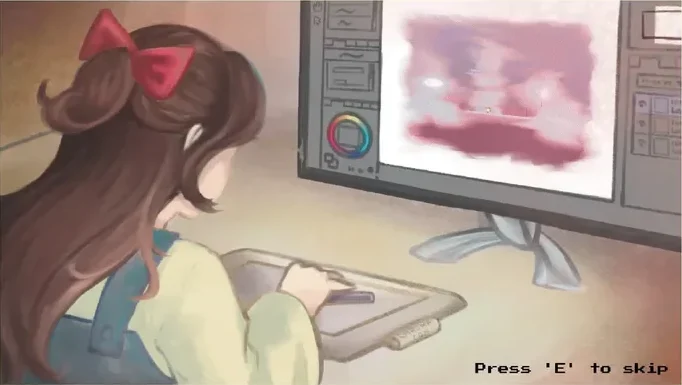
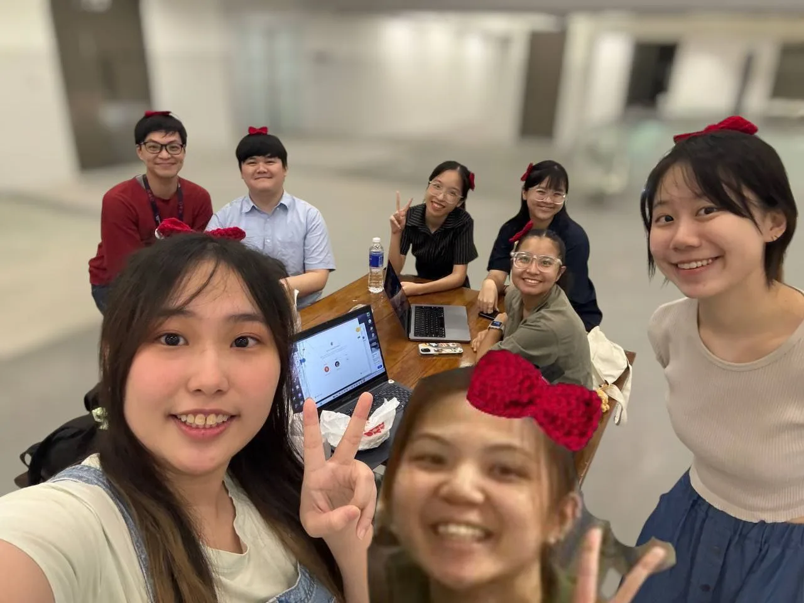

01 · The game
Colour is the puzzle.
You play an artist trapped in a dreamscape. Shoot a colour at a slimy paint platform and it changes how it behaves. Collect 6 of the 10 light bulbs in a level to unlock the exit.
02 · The physics
Rules simple enough for a tutorial page.
As physics lead, I owned how the platforms move and react. Every puzzle in the game rests on three rules:
- Same colours stick. Two yellow platforms that touch join together. Different colours don’t.
- Gravity platforms fall when you click them, and keep falling until they land on a platform of the same colour.
- Moving platforms start and stop when you click them, like a lift.

Players never see physics code, only whether it feels fair. A platform that stuck to the wrong colour even once made players stop trusting the rules, so getting the edge cases right mattered more than adding new platform types.


03 · Picking up the slack
From one system to most of the engine.
Partway through, some tasks weren’t getting done. Rather than let the game slip, I took them on:
- Graphics: how sprites, lighting and backgrounds are drawn on screen.
- Level editor: so our designer could lay out levels without asking a programmer.
- Particle system: the paint splashes, dust and sparkles that make the game feel alive.
I also started organising everyone’s tasks, turning what our designer needed into work for the programmers, fixing bugs and cleaning up tangled code so new features stopped breaking old ones. By the end, my professor credited me as the project manager.


04 · Trade-offs
The calls I made, and what they cost.
Parts of the game weren’t being built. What should I do?
Build them myself (chosen)
The graphics, level editor and particle system got done, and the game shipped complete. Costs: far less time to polish my own physics work, and a lot less sleep.
Wait and escalate (not chosen)
Fairer on paper, but the deadline wouldn’t move, and the whole team’s grade depended on a working game.
How should the team keep track of work?
One shared task list, with me as the go-between (chosen)
Everyone could see what was left and who owned it, and our designer had one person to ask instead of six. Costs: coordinating took time I could have spent coding.
Let each person manage their own tasks (not chosen)
Less overhead, but that’s how work had been falling through the cracks.
New features kept breaking old ones. Fix or push on?
Clean up the messiest code first (chosen)
Untangling it made each later feature faster and safer to add. Costs: a few days with nothing new to show.
Keep adding features on top (not chosen)
More progress early, but every bug fix risked creating two more.
05 · What I learned
A team project is a people project.
Someone has to hold the whole picture. Most of our problems weren’t code. They were tasks nobody owned and needs nobody passed on.
Track assets in one place. In our post-mortem, we agreed a shared sheet of every asset, and what’s in the game, would have saved hours of “is this done?”
Pull before you push. Most of our merge conflicts came from out-of-date branches. A team habit fixes that better than any tool.
